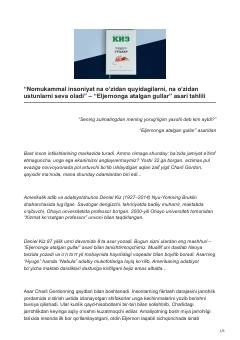

EADeniel Kizning mashhur asari bo'yicha chuqur adabiy tahlil va sharh.
Ushbu asar Deniel Kizning mashhur 'Eljernonga atalgan gullar' romanining tahliliga bag'ishlangan. Unda aqlan zaif Charli Gordonning jarrohlik amaliyoti orqali aqliy o'sishi va jamiyatning unga bo'lgan munosabati chuqur tahlil qilinadi.